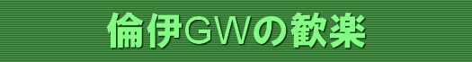
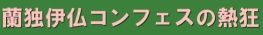

| About This Site |
| FootballとDreamTheaterの不定期更新サイト というか管理人Silverの旅行記です。 Contents of this site are written in Japanese only. |
| メインコンテンツ |
| 2002年6月 日韓ワールドカップ体験記 チケット獲得奮闘記 WC9試合観戦記 |
|
| 2002年10月 ロンドン～パリ旅行記 プレミア・フランスリーグ観戦 DreamTheaterヨーロッパツアー SpecialNight |
|
| 2003年7月 LA&NY旅行記 DreamTheater/Queensryche METALLICA SummerSanitairumTour Ozzfest2003 (Ozzy, Korn etc) Classic Rock's Main Event (Journey etc) MLS観戦・国際親善試合観戦 メジャーリーグ観戦 |
|
|
2003年12月 ロンドン～マンチェスター旅行記 |
|
2004年2月 イタリア～スペイン～ポルトガル旅行記 |
|
| 2004年4月 国内縦断～ソウル・釜山旅行記 DreamTheater ToT AsianLeg 韓国野球観戦 |
|
| 2004年6月 ポルトガル旅行記 Euro2004グループリーグ観戦 Metallica & Slipknot（ミュンヘン） JudasPriest & Soulfly（プラハ） |
|
| 2004年12月 ハワイ旅行記 ハワイ島・ホノルル観光 |
|
|
 |
2005年4月 ロンドン・イタリア旅行記 チャンピオンズリーグ・プレミア・セリエA観戦 James LaBrieソロツアー |
|
 |
2005年6月 オランダ・ドイツ・イタリア・パリ旅行記 Fields of Rock Festival（Black Sabbath, Rammstein他） コンフェデレーションカップ観戦 Dream Theater European Summer 2005 |
| セレクション |